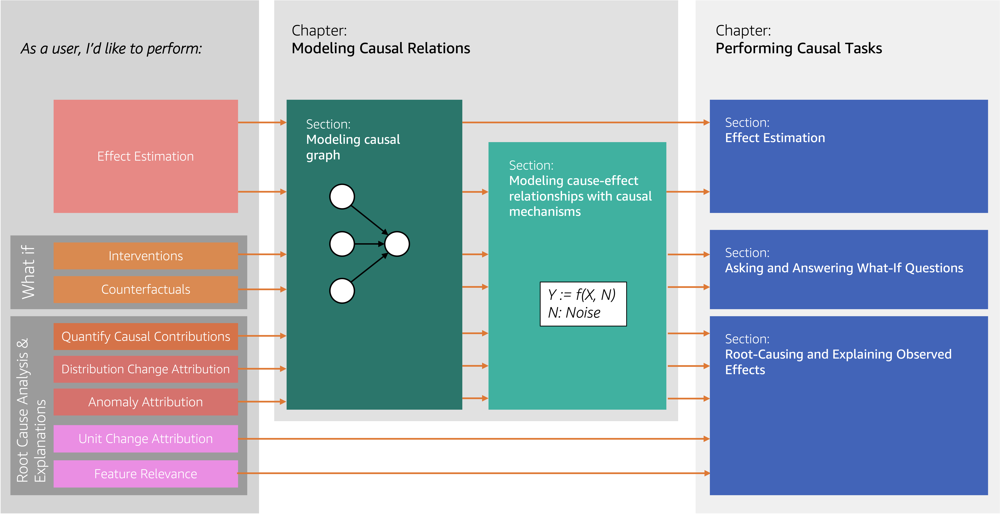

Introduction to DoWhy#
Much like machine learning libraries have done for prediction, DoWhy is a Python library that aims to spark causal thinking and analysis. DoWhy provides a wide variety of algorithms for effect estimation, prediction, quantification of causal influences, causal structure learning, diagnosis of causal structures, root cause analysis, interventions and counterfactuals. A key feature of DoWhy is its refutation API that can test causal assumptions for any estimation method, thus making inference more robust and accessible to non-experts.
DoWhy supports estimation of the average causal effect for backdoor, frontdoor, instrumental variable and other identification methods, and estimation of the conditional effect (CATE) through an integration with the EconML library. Additionally, DoWhy supports answering causal questions beyond effect estimation by utilizing graphical causal models, which enable tackling problems such as root cause analysis or quantification of causal influences.
Supported causal tasks#
DoWhy’s API is organized around the different causal tasks that it enables a user to perform. We categorize tasks into Estimating Causal Effects, Quantify Causal Influence, Root-Cause Analysis and Explanation, Asking and Answering What-If Questions, and Predicting outcome for out-of-distribution inputs. These tasks give answers to questions, such as “If I change the color of my button to red, how much will this change users’ purchase decisions?”, or “Which service in my distributed system has caused the frontend to be slower than usual?”.
To perform tasks, DoWhy leverages two powerful frameworks, namely graphical causal models (GCM) and potential outcomes (PO), depending on the task at hand. What’s common to most tasks is that they require a causal graph, which is modeled after the problem domain. For that reason, this user guide starts with Modeling Causal Relations.
See the following chart for a quick overview of some DoWhy’s features covered in this user-guide:
{kind=link}
Testing validity of a causal analysis#
Since causal tasks concern an interventional data distribution that is often not observed, we need special ways to evaluate the validity of a causal estimate. Methods like cross-validation from predictive machine learning do not work, unless we have access to samples from the interventional distribution. Therefore, for each causal task, a important part of the analysis is to test whether the obtained answer is valid. In DoWhy, we call this process refutation, which involves refuting or challenging the assumptions made by a causal analysis. Refutations are performed at two stages: after modeling the causal graph, and after completing the analysis for a task.
In the first stage, graph refutations test whether the assumptions encoded in a given causal graph are valid. This is an important set of refutations since all downstream analysis depends on the graph. These refutations are typically task-agnostic and we recommend running them to improve the quality of the assumed graph. DoWhy’s functionality for refuting a causal graph is described in Refuting a Causal Graph (also see Falsification of User-Given Directed Acyclic Graphs for an alternative approach). For effect estimation problems, the second kind of refutations, estimate refutations, are conducted after the task analysis returns a causal estimate. These refutations test whether the analysis follows best practices, provides the correct answer under special test data, and how robust the final estimate is to violation of assumptions. Estimate refutations can help improve the robustness of an analysis or help choose between multiple candidate models in the analysis. We discuss estimate refutations in a separate chapter, Refuting causal estimates.
In the case of graphical causal models, one can additionally falsify certain assumptions about the underlying causal mechanisms and evaluate their performance on test data. For more details see Evaluate a GCM.
Who this user guide is for#
If you are new to causal inference, this user guide helps you understand the difference causal tasks and provides examples on how to implement them using DoWhy.
If you are familiar with causal inference, you can jump right into code examples. To see DoWhy in action, check out how it can be applied to estimate the effect of a subscription or rewards program for customers [Rewards notebook] and for implementing and evaluating causal inference methods on benchmark datasets like the Infant Health and Development Program (IHDP) dataset, Infant Mortality (Twins) dataset, and the Lalonde Jobs dataset. For an introductory example of using graphical causal models for root cause analysis, check out the Root Cause Analysis in a Microservice Architecture notebook or the Causal Attributions and Root-Cause Analysis in an Online Shop notebook. For a full list of example notebooks, see Example notebooks.